PRIME SUSPECT / ART PRODUCTION
팩터 디코더 · UI 시연
게임이 아니라 에셋 검토용 페이지입니다. 숫자는 시연 예시이며 사건 판정·저장·통신을 하지 않습니다. 실제 기능과 접근성은 게임 연결 단계에서 구현해야 합니다.
01 · 얇은 프레임
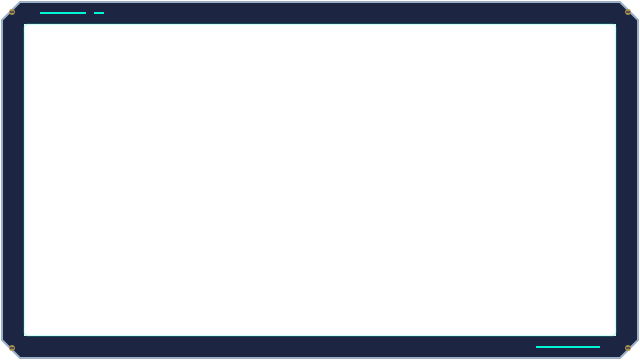
시연 데이터 / 실제 사건 아님2² × 3² × 5¹기록값만으로 순서·시각·소지자를 알 수 없음
02 · 인수 상태
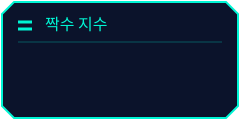
22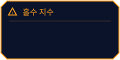
51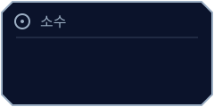
1,00903 · 기록 조작부
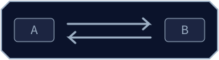
시연: 교환 선택 해제
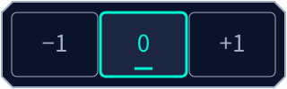
시연 선택값: 0. 실제 기록에는 적용하지 않습니다.
04 · 모순 제시 버튼 상태
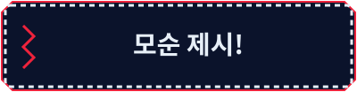
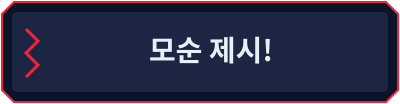
05 · 방 번호 배지
기본
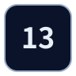
선택됨
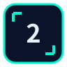
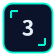
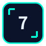
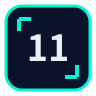
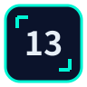
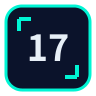
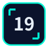
주목 · 유죄 표시 아님
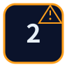
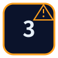
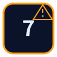
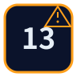
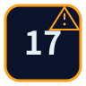
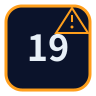
06 · 1회성 연출
재생은 수동이며 반복 점멸하지 않습니다. 동작 줄이기 설정에서는 정적 안내만 표시합니다.
아직 재생하지 않았습니다.